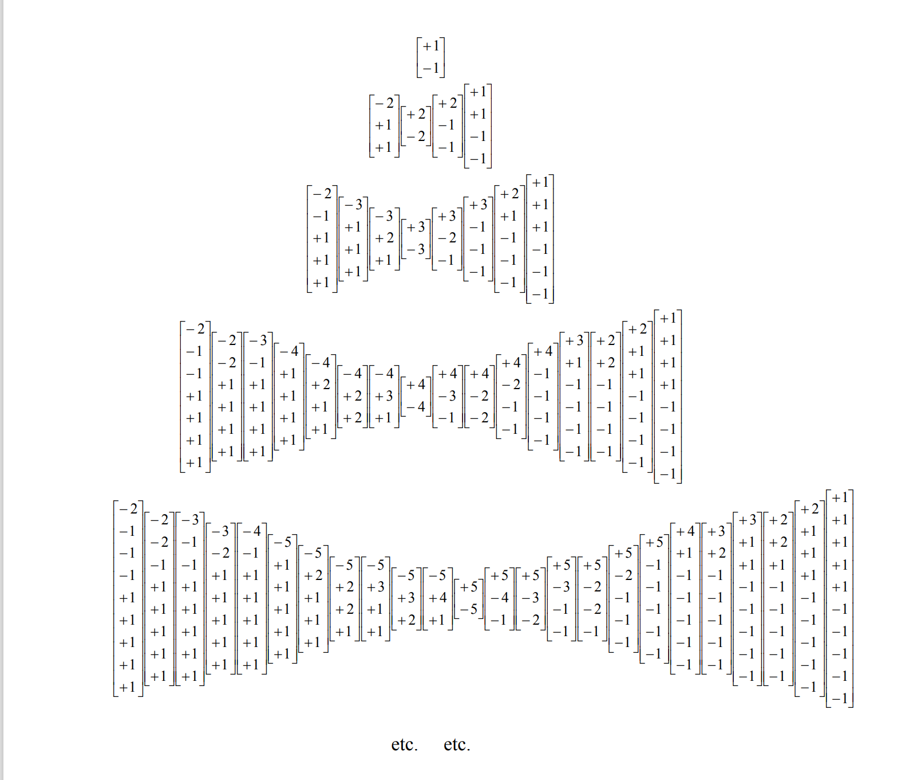

“The time has come in physics not for blackboards filled with equations, but for clear thinking.”
“We shall be known as the generation of physicists that solved nothing”. (Pauli)
The research team at JHM Labs has been actively working on Weber \(N\)-body problem for nearly three years. It’s a patient process. We briefly discuss a simple idea about bounded orbits and Mendeleev.
Bounded Orbits and \(\{H<0\}\)
In this post we want to describe a simple idea. Consider the Weber Hamiltonian \(H = [formula]\). Consider an initial state \(p\) which evolves according to the Weber-Hamilton equations. Then how can we predict or decide whether the orbit is bounded asymptotically as \(t\to +\infty\)?
We begin with the observation that: an orbit is unbounded if some radial distance \(r_{ij}\) diverges with \(t \to +\infty\). But this implies the Weber potential \(U_{ij}\) vanishes as \(t\to +\infty\). Conservation of Energy implies \(H=T+U\) is constant, and therefore \(H=T+0=T \geq 0\), since \(T\geq 0\) as a sum of squares.
This implies the following simple criterion: If the Hamiltonian energy is negative $ H < 0 $, then the state orbit is asymptotically bounded.
Given that negative energy states correspond to bounded states, it’s interesting to consider the problem of displacement (translation) between two negative states \(p_0\), \(p_1\). The natural question arises: Is it possible to translate \(p_t\) satisfying \(H(p_t)<<0\) for \(0 \leq t \leq 1\)? This is effectively a form of alchemy.
As we understand it, all molecules and matter consists of electrodynamics and electrons and protons. The mass difference \(m_p =1836 \times m_e\) is unexplained. Atoms are bounded electrodynamic systems. Therefore atoms correspond to negative Hamiltonian states.
What is the difference between lead and gold?
In state space we are looking to reconfigure from lead to gold. The inner atomic configurations are probably extremely different from the gold configuration. How much \([-2]\) molecules are involved in gold rather than lead? These molecules do not form of themselves, but require \(E=\mu c^2\) Joules of work from the environment.
Remark. The general problem is estimating the energy difference between two different states. How much external energy is required to reassemble the electrical systems?
Speculation. Can we assume that a state is equidistributed along the Hamiltonian energy level, i.e. does the WH-equations of motion translate initial states uniformly throughout \(H=\text{constant}\)?
Weber and Mendeleev
It’s rumoured that Mendeleev saw visions when developing his ideas about the periodic table in 1869. But what was the primary principle underlying the entire table? It’s left unspoken by Mendeleev, who primarily emphasizes atomic mass weights and the periodic chemical properties of various atomic elements. What are the basic properties studied by the chemists? We confess our partial ignorance here.
We have our own vision. Is it possible that Weber and his surprising (-2) molecule leads to a refoundation of the stable atomic elements? Following Weber, we follow the literal idea of planetary atomic models as a precise model. This restores classical physics and stabilizes the atom.
